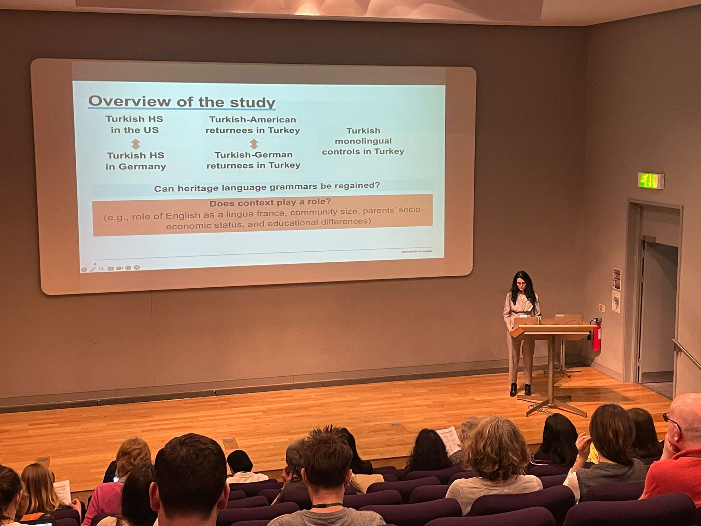
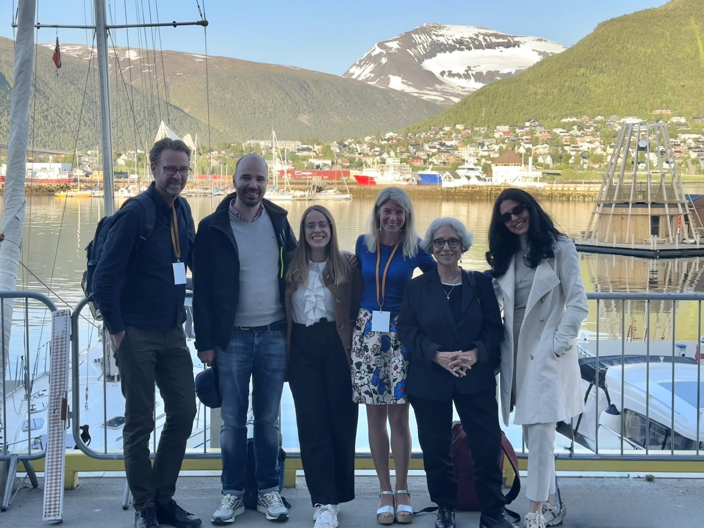
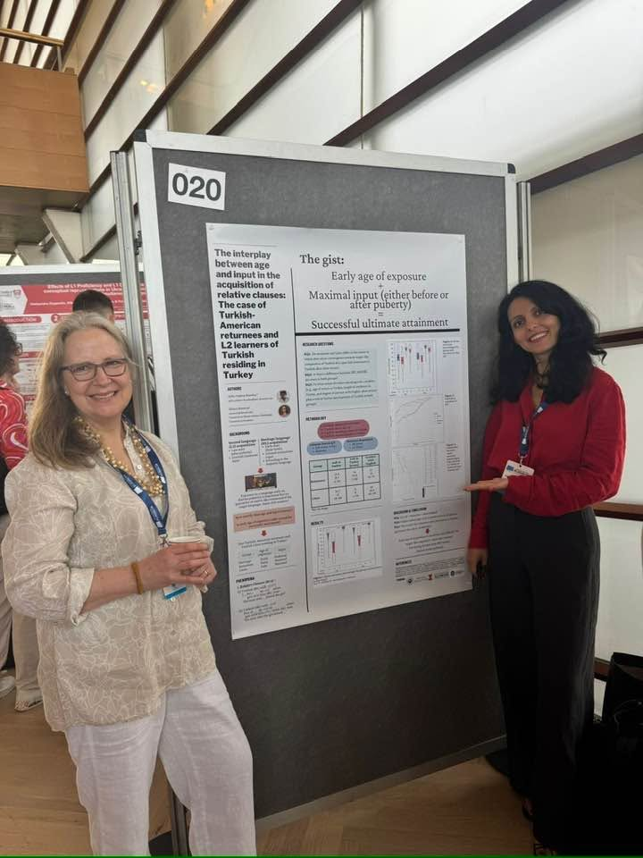
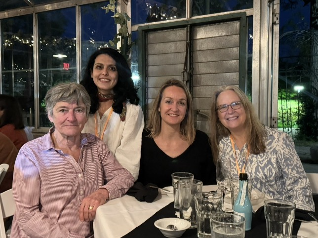
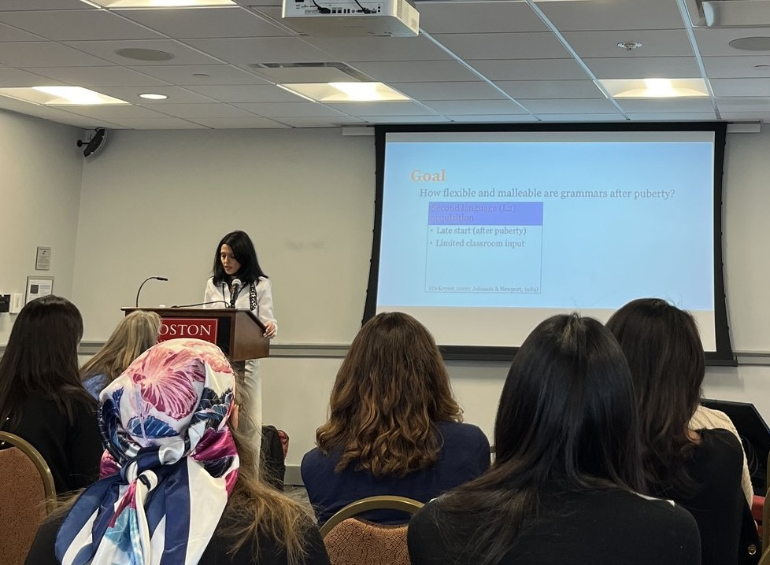

I am a Humboldt Postdoctoral Fellow at the University of Konstanz. My research is grounded in linguistic theory and focuses on bilingual language acquisition and experimental linguistics — morphology, syntax, and semantics.
I received my Ph.D. from the University of Illinois Urbana‑Champaign in 2024, where I wrote my dissertation as an advisee of Dr. Silvina Montrul. The overarching goal of my research is to understand how age and input/experience factors interact in the early years of language development and in ultimate attainment, helping build more complete models of bilingual language acquisition. I work with data from understudied languages such as Turkish, and I am currently investigating the heritage acquisition, maintenance, and (re)activation of Turkish in contact with German and English.
I graduated with a B.A. (Hons.) in Foreign Language Education from Boğaziçi University, İstanbul, Turkey, in 2015. In 2018, I received my first M.A. in Foreign Language Education, also from Boğaziçi University, where I was advised by Dr. Ayşe Gürel. I completed a second M.A. thesis under the supervision of Dr. Silvina Montrul at the University of Illinois Urbana‑Champaign.
For more detail, see my CV or get in touch.
A collection of moments from conferences, presentations, workshops, and collaborations with colleagues around the world.




